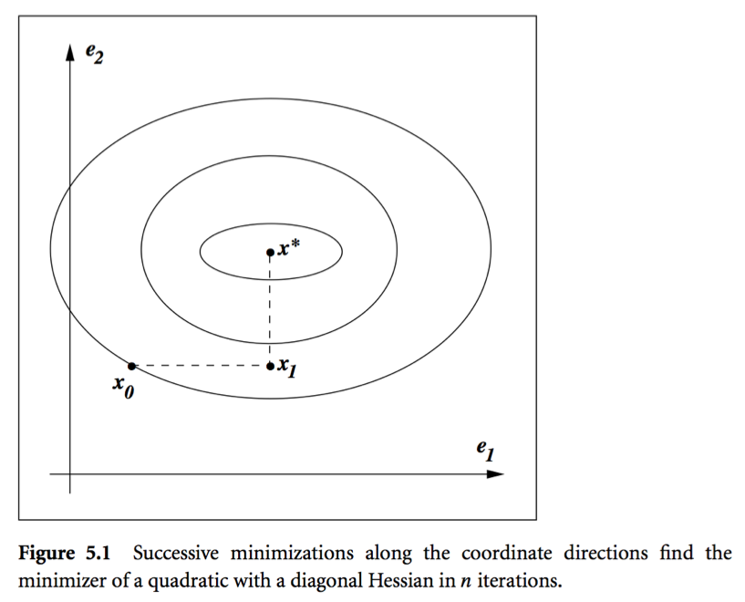

Julia Version 1.9.3
Commit bed2cd540a1 (2023-08-24 14:43 UTC)
Build Info:
Official https://julialang.org/ release
Platform Info:
OS: macOS (x86_64-apple-darwin22.4.0)
CPU: 8 × Intel(R) Core(TM) i5-8279U CPU @ 2.40GHz
WORD_SIZE: 64
LIBM: libopenlibm
LLVM: libLLVM-14.0.6 (ORCJIT, skylake)
Threads: 2 on 8 virtual coresIterative Method for Solving Linear Systems
Advanced Statistical Computing
Joong-Ho Won
Seoul National University
October 2023
Status `~/Dropbox/class/M1399.000200/2023/M1300_000200-2023fall/lectures/11-iterative/Project.toml`
[6e4b80f9] BenchmarkTools v1.3.2
[42fd0dbc] IterativeSolvers v0.9.2
[b51810bb] MatrixDepot v1.0.10
[af69fa37] Preconditioners v0.6.1
[b8865327] UnicodePlots v3.6.0Introduction
So far we have considered direct methods for solving linear equations.
- Direct methods (flops fixed a priori) vs iterative methods:
- Direct method (GE/LU, Cholesky, QR, SVD): accurate. good for dense, small to moderate sized \(\mathbf{A}\)
- Iterative methods (Jacobi, Gauss-Seidal, SOR, conjugate-gradient, GMRES): accuracy depends on number of iterations. good for large, sparse, structured linear system, parallel computing, warm start (reasonable accuracy after, say, 100 iterations)
- Direct method (GE/LU, Cholesky, QR, SVD): accurate. good for dense, small to moderate sized \(\mathbf{A}\)
Motivation: PageRank

Source: Wikepedia
\(\mathbf{A} \in \{0,1\}^{n \times n}\) the connectivity matrix of webpages with entries \[ \begin{eqnarray*} a_{ij} = \begin{cases} 1 & \text{if page $i$ links to page $j$} \\ 0 & \text{otherwise} \end{cases}. \end{eqnarray*} \] \(n \approx 10^9\) in May 2017.
\(r_i = \sum_j a_{ij}\) is the out-degree of page \(i\).
- Larry Page imagined a random surfer wandering on internet according to following rules:
- From a page \(i\) with \(r_i>0\)
- with probability \(p\), (s)he randomly chooses a link \(j\) from page \(i\) (uniformly) and follows that link to the next page
- with probability \(1-p\), (s)he randomly chooses one page from the set of all \(n\) pages (uniformly) and proceeds to that page
- with probability \(p\), (s)he randomly chooses a link \(j\) from page \(i\) (uniformly) and follows that link to the next page
- From a page \(i\) with \(r_i=0\) (a dangling page), (s)he randomly chooses one page from the set of all \(n\) pages (uniformly) and proceeds to that page
- From a page \(i\) with \(r_i>0\)
The process defines an \(n\)-state Markov chain, where each state corresponds to each page. \[ p_{ij} = (1-p)\frac{1}{n} + p\frac{a_{ij}}{r_i} \] with interpretation \(a_{ij}/r_i = 1/n\) if \(r_i = 0\).
Stationary distribution of this Markov chain gives the score (long term probability of visit) of each page.
Stationary distribution can be obtained as the top left eigenvector of the transition matrix \(\mathbf{P}=(p_{ij})\) corresponding to eigenvalue 1. \[ \mathbf{x}^T\mathbf{P} = \mathbf{x}^T. \]
Equivalently it can be cast as a linear equation. \[ (\mathbf{I} - \mathbf{P}^T) \mathbf{x} = \mathbf{0}. \]
You’ve got to solve a linear equation with \(10^9\) variables!
GE/LU will take \(2 \times (10^9)^3/3/10^{12} \approx 6.66 \times 10^{14}\) seconds \(\approx 20\) million years on a tera-flops supercomputer!
Iterative methods come to the rescue.
Splitting and fixed point iteration
The key idea of iterative method for solving \(\mathbf{A}\mathbf{x}=\mathbf{b}\) is to split the matrix \(\mathbf{A}\) so that \[ \mathbf{A} = \mathbf{M} - \mathbf{K} \] where \(\mathbf{M}\) is invertible and easy to invert.
Then \(\mathbf{A}\mathbf{x} = \mathbf{M}\mathbf{x} - \mathbf{K}\mathbf{x} = \mathbf{b}\) or \[ \mathbf{x} = \mathbf{M}^{-1}\mathbf{K}\mathbf{x} - \mathbf{M}^{-1}\mathbf{b} . \] Thus a solution to \(\mathbf{A}\mathbf{x}=\mathbf{b}\) is a fixed point of iteration \[ \mathbf{x}^{(t+1)} = \mathbf{M}^{-1}\mathbf{K}\mathbf{x}^{(t)} - \mathbf{M}^{-1}\mathbf{b} = \mathbf{R}\mathbf{x}^{(t)} - \mathbf{c} . \]
- Under a suitable choice of \(\mathbf{R}\), i.e., splitting of \(\mathbf{A}\), the sequence \(\mathbf{x}^{(t)}\) generated by the above iteration converges to a solution \(\mathbf{A}\mathbf{x}=\mathbf{b}\):
Theorem
Let \(\rho(\mathbf{R})=\max_{i=1,\dotsc,n}|\lambda_i(\mathbf{R})|\), where \(\lambda_i(\mathbf{R})\) is the \(i\)th (complex) eigenvalue of \(\mathbf{R}\). The iteration \(\mathbf{x}^{(t+1)}=\mathbf{R}\mathbf{x}^{(t)} - \mathbf{c}\) converges to a solution to \(\mathbf{A}\mathbf{x}=\mathbf{b}\) if and only if \(\rho(\mathbf{R}) < 1\).
- Proof: HW.
Jacobi’s method
\[ x_i^{(t+1)} = \frac{b_i - \sum_{j=1}^{i-1} a_{ij} x_j^{(t)} - \sum_{j=i+1}^n a_{ij} x_j^{(t)}}{a_{ii}}. \]
Split \(\mathbf{A} = \mathbf{L} + \mathbf{D} + \mathbf{U}\) = (strictly lower triangular) + (diagonal) + (strictly upper triangular).
Take \(\mathbf{M}=\mathbf{D}\) (easy to invert!) and \(\mathbf{K}=-(\mathbf{L} + \mathbf{U})\): \[ \mathbf{D} \mathbf{x}^{(t+1)} = - (\mathbf{L} + \mathbf{U}) \mathbf{x}^{(t)} + \mathbf{b}, \] i.e., \[ \mathbf{x}^{(t+1)} = - \mathbf{D}^{-1} (\mathbf{L} + \mathbf{U}) \mathbf{x}^{(t)} + \mathbf{D}^{-1} \mathbf{b} = - \mathbf{D}^{-1} \mathbf{A} \mathbf{x}^{(t)} + \mathbf{x}^{(t)} + \mathbf{D}^{-1} \mathbf{b}. \]
Convergence is guaranteed if \(\mathbf{A}\) is striclty row diagonally dominant: \(|a_{ii}| > \sum_{j\neq i}|a_{ij}|\).
One round costs \(2n^2\) flops with an unstructured \(\mathbf{A}\). Gain over GE/LU if converges in \(o(n)\) iterations.
Saving is huge for sparse or structured \(\mathbf{A}\). By structured, we mean the matrix-vector multiplication \(\mathbf{A} \mathbf{v}\) is fast (\(O(n)\) or \(O(n \log n)\)).
- Often the multiplication is implicit and \(\mathbf{A}\) is not even stored, e.g., finite difference: \((\mathbf{A}\mathbf{v})_i = v_i - v_{i+1}\).
Gauss-Seidel method
\[ x_i^{(t+1)} = \frac{b_i - \sum_{j=1}^{i-1} a_{ij} x_j^{(t+1)} - \sum_{j=i+1}^n a_{ij} x_j^{(t)}}{a_{ii}}. \]
Split \(\mathbf{A} = \mathbf{L} + \mathbf{D} + \mathbf{U}\) = (strictly lower triangular) + (diagonal) + (strictly upper triangular) as Jacobi.
Take \(\mathbf{M}=\mathbf{D}+\mathbf{L}\) (easy to invert, why?) and \(\mathbf{K}=-\mathbf{U}\): \[ (\mathbf{D} + \mathbf{L}) \mathbf{x}^{(t+1)} = - \mathbf{U} \mathbf{x}^{(t)} + \mathbf{b} \] i.e., \[ \mathbf{x}^{(t+1)} = - (\mathbf{D} + \mathbf{L})^{-1} \mathbf{U} \mathbf{x}^{(t)} + (\mathbf{D} + \mathbf{L})^{-1} \mathbf{b}. \]
Equivalent to \[ \mathbf{D}\mathbf{x}^{(t+1)} = - \mathbf{L} \mathbf{x}^{(t+1)} - \mathbf{U} \mathbf{x}^{(t)} + \mathbf{b} \] or \[ \mathbf{x}^{(t+1)} = \mathbf{D}^{-1}(- \mathbf{L} \mathbf{x}^{(t+1)} - \mathbf{U} \mathbf{x}^{(t)} + \mathbf{b}) \] leading to the iteration.
“Coordinate descent” version of Jacobi.
Convergence is guaranteed if \(\mathbf{A}\) is striclty row diagonally dominant.
Successive over-relaxation (SOR)
\[ \small x_i^{(t+1)} = \frac{\omega}{a_{ii}} \left( b_i - \sum_{j=1}^{i-1} a_{ij} x_j^{(t+1)} - \sum_{j=i+1}^n a_{ij} x_j^{(t)} \right)+ (1-\omega) x_i^{(t)} \]
\(\omega=1\): Gauss-Seidel; \(\omega \in (0, 1)\): underrelaxation; \(\omega > 1\): overrelaxation
- Relaxation in hope of faster convergence
Split \(\mathbf{A} = \mathbf{L} + \mathbf{D} + \mathbf{U}\) = (strictly lower triangular) + (diagonal) + (strictly upper triangular) as before.
Take \(\mathbf{M}=\frac{1}{\omega}\mathbf{D}+\mathbf{L}\) (easy to invert, why?) and \(\mathbf{K}=\frac{1-\omega}{\omega}\mathbf{D}-\mathbf{U}\): \[ \begin{split} (\mathbf{D} + \omega \mathbf{L})\mathbf{x}^{(t+1)} &= [(1-\omega) \mathbf{D} - \omega \mathbf{U}] \mathbf{x}^{(t)} + \omega \mathbf{b} \\ \mathbf{D}\mathbf{x}^{(t+1)} &= (1-\omega) \mathbf{D}\mathbf{x}^{(t)} + \omega ( -\mathbf{U}\mathbf{x}^{(t)} - \mathbf{L}\mathbf{x}^{(t+1)} + \mathbf{b} ) \\ \mathbf{x}^{(t+1)} &= (1-\omega)\mathbf{x}^{(t)} + \omega \mathbf{D}^{-1} ( -\mathbf{U}\mathbf{x}^{(t)} - \mathbf{L}\mathbf{x}^{(t+1)} + \mathbf{b} ) \end{split} \]
Conjugate gradient method
- CG is the method of choice for solving large, structured linear systems \(\mathbf{A} \mathbf{x} = \mathbf{b}\), where \(\mathbf{A}\) is positive definite.
- Solving linear equation \(\mathbf{A} \mathbf{x} = \mathbf{b}\), where \(\mathbf{A} \in \mathbb{R}^{n \times n}\) is positive definite, is equivalent to \[ \begin{eqnarray*} \text{minimize} \,\, f(\mathbf{x}) = \frac 12 \mathbf{x}^T \mathbf{A} \mathbf{x} - \mathbf{b}^T \mathbf{x}. \end{eqnarray*} \] Denote \(\nabla f(\mathbf{x}) = \mathbf{A} \mathbf{x} - \mathbf{b}\).
Motivation: coordinate descent
Consider minimizing \(g(\mathbf{z}) = \frac{1}{2}\mathbf{z}^T\mathbf{z}\), whose minimizer is \(\mathbf{0}\).
Coordinate descent: starting from initial \(\mathbf{z}_0\), minimize \(g(\mathbf{z})\) along coordinate direction \(\mathbf{e}_i\) at iteration \(i\).
- \(\mathbf{z}_{i+1} = \mathbf{z}_i + t_{i+1}\mathbf{e}_{i+1}\), where
- \(t_{i+1} = \arg\min_t g(\mathbf{z}_i + t \mathbf{e}_{i+1})\)

This procedure achieves the minimum in \(n\) iterations (\(i=0, 1, \dotsc, n-1\)). Also, \[ \mathbf{e}_{i+1}^T\mathbf{e}_j = 0, \quad \nabla g(\mathbf{z}_i)^T\mathbf{e}_j = 0, \quad \forall j \le i. \]
Due to the spherical symmetry, we can substitute any set of orthogonal vectors \(\mathbf{u}_1, \dotsc, \mathbf{u}_n\) for \(\mathbf{e}_1, \dotsc, \mathbf{e}_n\).
From CD to conjugate directions
- Come back to
\[ \small \begin{split} f(\mathbf{x}) &= \frac{1}{2}\mathbf{x}^T\mathbf{A}\mathbf{x} - \mathbf{b}^T\mathbf{x} \\ &= \frac{1}{2}(\mathbf{x}-\mathbf{A}^{-1}\mathbf{b})^T\mathbf{A}(\mathbf{x} - \mathbf{A}^{-1}\mathbf{b}) - \frac{1}{2}\mathbf{b}^T\mathbf{A}^{-1}\mathbf{b} \end{split} \]
- Coordinate descent in the \(\mathbf{x}\)-space usually takes too many iterations:
- Change of variables \(\mathbf{z} = \mathbf{A}^{-1/2}\mathbf{x} - \mathbf{A}^{-1}\mathbf{b}\) yiels \[ \small \begin{split} f(\mathbf{z}) &= f(\mathbf{A}^{-1/2}\mathbf{x} - \mathbf{A}^{-1}\mathbf{b}) \\ &= \frac{1}{2}\mathbf{z}^T\mathbf{z} - \frac{1}{2}\mathbf{b}^T\mathbf{A}^{-1}\mathbf{b} = g(\mathbf{z}) - \frac{1}{2}\mathbf{b}^T\mathbf{A}^{-1}\mathbf{b} \end{split} \] Thus the problem reduces to minimizing \(g(\mathbf{z})\) in the transformed space.
- Now translate what happens in the \(z\)-space to the \(x\)-space:
| Method | \(z\)-space | \(x\)-space |
|---|---|---|
| Direction | \(\mathbf{u}_i\) | \(\mathbf{v}_i=\mathbf{A}^{-1/2}\mathbf{u}_i\) |
| Orthogonality | \(\mathbf{u}_{i+1}^T\mathbf{u}_j=0\), \(\forall j\le i\) | \(\mathbf{v}_{i+1}^T\mathbf{A}\mathbf{v}_j=0\), \(\forall j\le i\) |
| Optimality | \(\nabla g(\mathbf{z}_i)^T\mathbf{u}_j=0\), \(\forall j\le i\) | \((\mathbf{A}^{-1/2}\nabla f(\mathbf{x}_i))^T\mathbf{A}^{1/2}\mathbf{v}_j=\nabla f(\mathbf{x}_i)^T\mathbf{v}_j\), \(\forall j\le i\) |
The last condition is due to \(\nabla g(\mathbf{z}) = \mathbf{A}^{-1/2}\nabla f(\mathbf{x})\).
- Condition \(\mathbf{v}_i^T\mathbf{A}\mathbf{v}_j=0\) is called \(\mathbf{A}\)-orthogonality or conjugacy.
- Vectors \(\mathbf{v}_1, \dotsc, \mathbf{v}_n\) are called conjugate directions.
- Theorem: searching along the conjugate directions, \(\mathbf{x}_i\) converges to the solution in at most \(n\) steps (in exact arithmetic).
CG algorithm (basic version)
- Given \(\mathbf{x}_0\)
- Initialize: \(\mathbf{r}_0 \gets \mathbf{A} \mathbf{x}_0 - \mathbf{b}\), \(\mathbf{v}_1 \gets - \mathbf{r}_0\), \(\alpha_1 \gets 0\), \(i \gets 1\)
- While \(\mathbf{r}_i \ne \mathbf{0}\)
- \(t_{i} \gets - {\mathbf{r}_{i-1}^T \mathbf{v}_{i}}/{\mathbf{v}_{i}^T \mathbf{A} \mathbf{v}_{i}}\)
- \(\mathbf{x}_{i} \gets \mathbf{x}_{i-1} + t_{i} \mathbf{v}_{i}\)
- \(\mathbf{r}_{i} \gets \mathbf{A} \mathbf{x}_{i} - \mathbf{b}\)
- \(\alpha_{i+1} \gets {\mathbf{r}_i^T \mathbf{A} \mathbf{v}_i}/{\mathbf{v}_i^T \mathbf{A} \mathbf{v}_i}\)
- \(\mathbf{v}_{i+1} \gets - \mathbf{r}_i + \alpha_{i+1} \mathbf{v}_i\)
- \(i \gets i+1\)
- Note \(\mathbf{r}_i = \nabla f(\mathbf{x_i})\).
- Coordinate descent: \(\mathbf{x}_i = \mathbf{x}_{i-1} + t_i \mathbf{v}_i\) for some \(t_i\). Hence \[ \mathbf{r}_i = \mathbf{A}\mathbf{x}_i - \mathbf{b} = \mathbf{A}\mathbf{x}_{i-1} - \mathbf{b} + t_i\mathbf{A}\mathbf{v}_i = \mathbf{r}_{i-1} + t_i\mathbf{A}\mathbf{v}_i \]
- From the optimaltity conditions \(\mathbf{r}_i^T\mathbf{v}_j=0\), \(\forall j\le i\). Therefore \[ \mathbf{v}_i^T\mathbf{r}_i = 0 = \mathbf{v}_i^T\mathbf{r}_{i-1} + t_i\mathbf{v}_i^T\mathbf{A}\mathbf{v}_i, \] yielding \(t_i = - \mathbf{v}_i^T\mathbf{r}_{i-1}/\mathbf{v}_i^T\mathbf{A}\mathbf{v}_i\).
- Conjugate directions are constructed recursively, observing the conjugacy conditions \(\mathbf{v}_{i+1}^T\mathbf{A}\mathbf{v}_j\) for all \(j\le i\): \[ \mathbf{v}_{i+1} = -\nabla f(\mathbf{y}_{i}) + \alpha_{i+1}\mathbf{v}_{i} = -\mathbf{r}_{i} + \alpha_{i+1}\mathbf{v}_i. \]
- Choosing initial direction \(\mathbf{v}_1 = -\mathbf{r}_0\) yields \(\text{span}(\mathbf{r}_0,\dotsc,\mathbf{r}_{i-1}) = \text{span}(\mathbf{v}_1,\dotsc,\mathbf{v}_i)\).
- Using this, it can be shown that \(\alpha_{i+1} = \frac{\mathbf{r}_i^T \mathbf{A} \mathbf{v}_i}{\mathbf{v}_i^T \mathbf{A} \mathbf{v}_i}\) makes the sequence \(\{\mathbf{v}_1, \dotsc, \mathbf{v}_{i+1} \}\) \(\mathbf{A}\)-orthogonal (HW).
CG algorithm (economical version):
- Given \(\mathbf{x}_0\)
- Initialize: \(\mathbf{r}_0 \gets \mathbf{A} \mathbf{x}_0 - \mathbf{b}\), \(\mathbf{v}_1 \gets - \mathbf{r}_0\), \(\alpha_1 \gets 0\), \(i \gets 1\)
- While \(\mathbf{r}_i \ne \mathbf{0}\)
- \(t_{i} \gets {\mathbf{r}_{i-1}^T \mathbf{r}_{i}}/{\mathbf{v}_{i}^T \mathbf{A} \mathbf{v}_{i}}\)
- \(\mathbf{x}_{i} \gets \mathbf{x}_{i-1} + t_{i}\mathbf{v}_{i}\)
- \(\mathbf{r}_{i} \gets \mathbf{r}_{i-1} + t_{i}\mathbf{A}\mathbf{v}_{i}\)
- \(\boxed{\alpha_{i+1} \gets {\mathbf{r}_i^T \mathbf{r}_i}/{\mathbf{r}_{i-1}^T \mathbf{r}_{i-1}}}\)
- \(\mathbf{v}_{i+1} \gets - \mathbf{r}_i + \alpha_{i+1} \mathbf{v}_i\)
- \(i \gets i+1\)
- Saves one matrix-vector multiplication: \(\mathbf{A} \mathbf{v}_{i}\).
Krylov subspaces
- \(\{\mathbf{r}_0,\dotsc,\mathbf{r}_{k-1}\}\) is contained in the Krylov subspace of degree \(k\) for \(\mathbf{r}_0\):
\[ {\cal K}^k(\mathbf{A}, \mathbf{r}_0) = \text{span} \{\mathbf{r}_0, \mathbf{A}\mathbf{r}_0, \mathbf{A}^2 \mathbf{r}_0, \dotsc, \mathbf{A}^{k-1} \mathbf{r}_0 \}. \]
\(\{\mathbf{v}_1,\ldots,\mathbf{v}_{k}\}\) is contained in \({\cal K}^k(\mathbf{A}, \mathbf{r}_0)\).
Theorem: If \(\mathbf{A}\) has \(r\) distinct eigenvalues, \(\mathbf{x}_k\) converges to solution \(\mathbf{x}^\star=\mathbf{A}^{-1}\mathbf{b}\) in at most \(r\) steps.
Two important bounds for CG:
Let \(0 < \lambda_1 \le \cdots \le \lambda_n\) be the ordered eigenvalues of \(\mathbf{A}\).
\[ \small \begin{eqnarray*} \|\mathbf{x}^{(t+1)} - \mathbf{x}^*\|_{\mathbf{A}}^2 &\le& \left( \frac{\lambda_{n-t} - \lambda_1}{\lambda_{n-t} + \lambda_1} \right)^2 \|\mathbf{x}^{(0)} - \mathbf{x}^*\|_{\mathbf{A}}^2 \\ \|\mathbf{x}^{(t+1)} - \mathbf{x}^*\|_{\mathbf{A}}^2 &\le& 2 \left( \frac{\sqrt{\kappa(\mathbf{A})}-1}{\sqrt{\kappa(\mathbf{A})}+1} \right)^{t} \|\mathbf{x}^{(0)} - \mathbf{x}^*\|_{\mathbf{A}}^2, \end{eqnarray*} \]
where \(\kappa(\mathbf{A}) = \lambda_n/\lambda_1\) is the condition number of \(\mathbf{A}\) (why?).
- Messages:
- Roughly speaking, if the eigenvalues of \(\mathbf{A}\) occur in \(r\) distinct clusters, the CG iterates will approximately solve the problem after \(O(r)\) steps.
- \(\mathbf{A}\) with a small condition number (\(\lambda_1 \approx \lambda_n\)) converges fast.
- Roughly speaking, if the eigenvalues of \(\mathbf{A}\) occur in \(r\) distinct clusters, the CG iterates will approximately solve the problem after \(O(r)\) steps.
Preconditioned CG
- Preconditioning: Change of variables \(\widehat{\mathbf{x}} = \mathbf{C} \mathbf{x}\) via a nonsingular \(\mathbf{C}\) and solve \[
(\mathbf{C}^{-T} \mathbf{A} \mathbf{C}^{-1}) \widehat{\mathbf{x}} = \mathbf{C}^{-T} \mathbf{b}.
\] Choose \(\mathbf{C}\) such that
- \(\mathbf{C}^{-T} \mathbf{A} \mathbf{C}^{-1}\) has small condition number, or
- \(\mathbf{C}^{-T} \mathbf{A} \mathbf{C}^{-1}\) has clustered eigenvalues
- Inexpensive solution of \(\mathbf{C}^T \mathbf{C} \mathbf{y} = \mathbf{r}\)
- PCG does not make use of \(\mathbf{C}\) explicitly, but rather the matrix \(\mathbf{M} = \mathbf{C}^T \mathbf{C}\).
PCG algorithm
- Given \(\mathbf{x}_0\), preconditioner \(\mathbf{M}\)
- Initialize: \(\mathbf{r}_0 \gets \mathbf{A} \mathbf{x}_0 - \mathbf{b}\)
- Solve \(\mathbf{M} \mathbf{y}_0 = \mathbf{r}_0\) for \(\mathbf{y}_0\)
- Initialize: \(\mathbf{v}_1 \gets - \mathbf{r}_0\), \(\alpha_1 \gets 0\), \(i \gets 1\)
- While \(\mathbf{r}_i \ne \mathbf{0}\)
- \(t_{i} \gets - {\mathbf{y}_{i-1}^T \mathbf{r}_{i}}/{\mathbf{v}_{i}^T \mathbf{A} \mathbf{v}_{i}}\)
- \(\mathbf{x}_{i} \gets \mathbf{x}_{i-1} + t_{i}\mathbf{v}_{i}\)
- \(\mathbf{r}_{i} \gets \mathbf{r}_{i-1} + t_{i}\mathbf{A}\mathbf{v}_{i}\)
- Solve \(\mathbf{M} \mathbf{y}_{i}=\mathbf{r}_{i}\) for \(\mathbf{y}_{i}\)
- \(\alpha_{i+1} \gets - {\mathbf{r}_i^T \mathbf{y}_i}/{\mathbf{r}_{i-1}^T \mathbf{r}_{i-1}}\)
- \(\mathbf{v}_{i+1} \gets - \mathbf{y}_i + \alpha_{i+1} \mathbf{v}_i\)
- \(i \gets i+1\)
- Preconditioning is more like an art than science. Some choices include
- Incomplete Cholesky. \(\mathbf{A} \approx \tilde{\mathbf{L}} \tilde{\mathbf{L}}^T\), where \(\tilde{\mathbf{L}}\) is a sparse approximate Cholesky factor. Then \(\tilde{\mathbf{L}}^{-1} \mathbf{A} \tilde{\mathbf{L}}^{-T} \approx \mathbf{I}\) (perfectly conditioned) and \(\mathbf{M} \mathbf{y} = \tilde{\mathbf{L}} \tilde {\mathbf{L}}^T \mathbf{y} = \mathbf{r}\) is easy to solve.
- Banded pre-conditioners.
- Choose \(\mathbf{M}\) as a coarsened version of \(\mathbf{A}\).
- Subject knowledge. Knowing the structure and origin of a problem is often the key to devising efficient pre-conditioner. For example, see Lee, Won, Lim, and Yoon (2017) for large-scale image-based regression.
- Incomplete Cholesky. \(\mathbf{A} \approx \tilde{\mathbf{L}} \tilde{\mathbf{L}}^T\), where \(\tilde{\mathbf{L}}\) is a sparse approximate Cholesky factor. Then \(\tilde{\mathbf{L}}^{-1} \mathbf{A} \tilde{\mathbf{L}}^{-T} \approx \mathbf{I}\) (perfectly conditioned) and \(\mathbf{M} \mathbf{y} = \tilde{\mathbf{L}} \tilde {\mathbf{L}}^T \mathbf{y} = \mathbf{r}\) is easy to solve.
Application to a fusion problem in physics
The incomplete Cholesky—conjugate gradient method for the iterative solution of systems of linear equations by D. Kershaw:
| Method | Number of Iterations |
|---|---|
| Gauss-Seidel | 208,000 |
| Block SOR methods | 765 |
| Incomplete Cholesky CG | 25 |
The structure should be exploited whenever possible in solving a problem.
Numerical examples
MatrixDepot.jl is an extensive collection of test matrices in Julia. After installation, we can check available test matrices by mdinfo().
Poisson linear system
using BenchmarkTools, IterativeSolvers, LinearAlgebra, MatrixDepot, Random
Random.seed!(280)
n = 100
# Poisson matrix of dimension n^2=10000, pd and sparse
A = matrixdepot("poisson", n)
@show typeof(A)
# dense matrix representation of A
Afull = convert(Matrix, A)
@show typeof(Afull)
# sparsity level
count(!iszero, A) / length(A)typeof(A) = SparseArrays.SparseMatrixCSC{Float64, Int64}
typeof(Afull) = Matrix{Float64}0.000496┌──────────────────────────────────────────┐ 1 │⠻⣦⡀⠀⠀⠀⠀⠀⠀⠀⠀⠀⠀⠀⠀⠀⠀⠀⠀⠀⠀⠀⠀⠀⠀⠀⠀⠀⠀⠀⠀⠀⠀⠀⠀⠀⠀⠀⠀⠀⠀⠀│ > 0 │⠀⠈⠻⣦⡀⠀⠀⠀⠀⠀⠀⠀⠀⠀⠀⠀⠀⠀⠀⠀⠀⠀⠀⠀⠀⠀⠀⠀⠀⠀⠀⠀⠀⠀⠀⠀⠀⠀⠀⠀⠀⠀│ < 0 │⠀⠀⠀⠈⠻⣦⡀⠀⠀⠀⠀⠀⠀⠀⠀⠀⠀⠀⠀⠀⠀⠀⠀⠀⠀⠀⠀⠀⠀⠀⠀⠀⠀⠀⠀⠀⠀⠀⠀⠀⠀⠀│ │⠀⠀⠀⠀⠀⠈⠻⣦⡀⠀⠀⠀⠀⠀⠀⠀⠀⠀⠀⠀⠀⠀⠀⠀⠀⠀⠀⠀⠀⠀⠀⠀⠀⠀⠀⠀⠀⠀⠀⠀⠀⠀│ │⠀⠀⠀⠀⠀⠀⠀⠈⠻⣦⡀⠀⠀⠀⠀⠀⠀⠀⠀⠀⠀⠀⠀⠀⠀⠀⠀⠀⠀⠀⠀⠀⠀⠀⠀⠀⠀⠀⠀⠀⠀⠀│ │⠀⠀⠀⠀⠀⠀⠀⠀⠀⠈⠻⣦⡀⠀⠀⠀⠀⠀⠀⠀⠀⠀⠀⠀⠀⠀⠀⠀⠀⠀⠀⠀⠀⠀⠀⠀⠀⠀⠀⠀⠀⠀│ │⠀⠀⠀⠀⠀⠀⠀⠀⠀⠀⠀⠈⠻⣦⡀⠀⠀⠀⠀⠀⠀⠀⠀⠀⠀⠀⠀⠀⠀⠀⠀⠀⠀⠀⠀⠀⠀⠀⠀⠀⠀⠀│ │⠀⠀⠀⠀⠀⠀⠀⠀⠀⠀⠀⠀⠀⠈⠻⣦⡀⠀⠀⠀⠀⠀⠀⠀⠀⠀⠀⠀⠀⠀⠀⠀⠀⠀⠀⠀⠀⠀⠀⠀⠀⠀│ │⠀⠀⠀⠀⠀⠀⠀⠀⠀⠀⠀⠀⠀⠀⠀⠈⠻⣦⡀⠀⠀⠀⠀⠀⠀⠀⠀⠀⠀⠀⠀⠀⠀⠀⠀⠀⠀⠀⠀⠀⠀⠀│ │⠀⠀⠀⠀⠀⠀⠀⠀⠀⠀⠀⠀⠀⠀⠀⠀⠀⠈⠻⣦⡀⠀⠀⠀⠀⠀⠀⠀⠀⠀⠀⠀⠀⠀⠀⠀⠀⠀⠀⠀⠀⠀│ │⠀⠀⠀⠀⠀⠀⠀⠀⠀⠀⠀⠀⠀⠀⠀⠀⠀⠀⠀⠈⠻⣦⡀⠀⠀⠀⠀⠀⠀⠀⠀⠀⠀⠀⠀⠀⠀⠀⠀⠀⠀⠀│ │⠀⠀⠀⠀⠀⠀⠀⠀⠀⠀⠀⠀⠀⠀⠀⠀⠀⠀⠀⠀⠀⠈⠻⣦⡀⠀⠀⠀⠀⠀⠀⠀⠀⠀⠀⠀⠀⠀⠀⠀⠀⠀│ │⠀⠀⠀⠀⠀⠀⠀⠀⠀⠀⠀⠀⠀⠀⠀⠀⠀⠀⠀⠀⠀⠀⠀⠈⠻⣦⡀⠀⠀⠀⠀⠀⠀⠀⠀⠀⠀⠀⠀⠀⠀⠀│ │⠀⠀⠀⠀⠀⠀⠀⠀⠀⠀⠀⠀⠀⠀⠀⠀⠀⠀⠀⠀⠀⠀⠀⠀⠀⠈⠻⣦⡀⠀⠀⠀⠀⠀⠀⠀⠀⠀⠀⠀⠀⠀│ │⠀⠀⠀⠀⠀⠀⠀⠀⠀⠀⠀⠀⠀⠀⠀⠀⠀⠀⠀⠀⠀⠀⠀⠀⠀⠀⠀⠈⠻⣦⡀⠀⠀⠀⠀⠀⠀⠀⠀⠀⠀⠀│ │⠀⠀⠀⠀⠀⠀⠀⠀⠀⠀⠀⠀⠀⠀⠀⠀⠀⠀⠀⠀⠀⠀⠀⠀⠀⠀⠀⠀⠀⠈⠻⣦⡀⠀⠀⠀⠀⠀⠀⠀⠀⠀│ │⠀⠀⠀⠀⠀⠀⠀⠀⠀⠀⠀⠀⠀⠀⠀⠀⠀⠀⠀⠀⠀⠀⠀⠀⠀⠀⠀⠀⠀⠀⠀⠈⠻⣦⡀⠀⠀⠀⠀⠀⠀⠀│ │⠀⠀⠀⠀⠀⠀⠀⠀⠀⠀⠀⠀⠀⠀⠀⠀⠀⠀⠀⠀⠀⠀⠀⠀⠀⠀⠀⠀⠀⠀⠀⠀⠀⠈⠻⣦⡀⠀⠀⠀⠀⠀│ │⠀⠀⠀⠀⠀⠀⠀⠀⠀⠀⠀⠀⠀⠀⠀⠀⠀⠀⠀⠀⠀⠀⠀⠀⠀⠀⠀⠀⠀⠀⠀⠀⠀⠀⠀⠈⠻⣦⡀⠀⠀⠀│ │⠀⠀⠀⠀⠀⠀⠀⠀⠀⠀⠀⠀⠀⠀⠀⠀⠀⠀⠀⠀⠀⠀⠀⠀⠀⠀⠀⠀⠀⠀⠀⠀⠀⠀⠀⠀⠀⠈⠻⣦⡀⠀│ 10 000 │⠀⠀⠀⠀⠀⠀⠀⠀⠀⠀⠀⠀⠀⠀⠀⠀⠀⠀⠀⠀⠀⠀⠀⠀⠀⠀⠀⠀⠀⠀⠀⠀⠀⠀⠀⠀⠀⠀⠀⠈⠻⣦│ └──────────────────────────────────────────┘ ⠀1⠀⠀⠀⠀⠀⠀⠀⠀⠀⠀⠀⠀⠀⠀⠀⠀⠀⠀⠀⠀⠀⠀⠀⠀⠀⠀⠀⠀⠀⠀⠀⠀⠀⠀⠀10 000⠀ ⠀⠀⠀⠀⠀⠀⠀⠀⠀⠀⠀⠀⠀⠀⠀⠀⠀49 600 ≠ 0⠀⠀⠀⠀⠀⠀⠀⠀⠀⠀⠀⠀⠀⠀⠀⠀⠀
Matrix-vector muliplication
# randomly generated vector of length n^2
b = randn(n^2)
# dense matrix-vector multiplication
@benchmark $Afull * $bBenchmarkTools.Trial: 119 samples with 1 evaluation. Range (min … max): 39.458 ms … 57.874 ms ┊ GC (min … max): 0.00% … 0.00% Time (median): 41.578 ms ┊ GC (median): 0.00% Time (mean ± σ): 41.978 ms ± 1.886 ms ┊ GC (mean ± σ): 0.00% ± 0.00% ▆▆█▃▄ ▁ ▃▁▁▁▁▄▃█████▇█▇▇▄▄▁▄▃▁▁▄▁▃▁▁▁▁▁▁▁▁▁▁▁▁▁▁▁▁▁▁▁▁▁▁▁▁▁▁▁▁▁▁▁▁▃ ▃ 39.5 ms Histogram: frequency by time 51.5 ms < Memory estimate: 78.17 KiB, allocs estimate: 2.
BenchmarkTools.Trial: 10000 samples with 1 evaluation. Range (min … max): 44.813 μs … 5.904 ms ┊ GC (min … max): 0.00% … 97.79% Time (median): 87.975 μs ┊ GC (median): 0.00% Time (mean ± σ): 100.695 μs ± 224.062 μs ┊ GC (mean ± σ): 9.07% ± 4.02% ▃▂▂ ▄▇███▇▇▆▅▄▃▃▂▁ ▁ ▁ ▁ ▃ ████▇▆▅▆▅▆▅▄▁▇███████████████▇███▇████▇▇▇█▇▅▆▇█▇█▇▇▆▆▇▇▆▇▆▅▆▇ █ 44.8 μs Histogram: log(frequency) by time 189 μs < Memory estimate: 78.17 KiB, allocs estimate: 2.
Dense solve via Cholesky
BenchmarkTools.Trial: 2 samples with 1 evaluation. Range (min … max): 3.272 s … 3.448 s ┊ GC (min … max): 1.53% … 0.01% Time (median): 3.360 s ┊ GC (median): 0.75% Time (mean ± σ): 3.360 s ± 123.938 ms ┊ GC (mean ± σ): 0.75% ± 1.08% █ █ █▁▁▁▁▁▁▁▁▁▁▁▁▁▁▁▁▁▁▁▁▁▁▁▁▁▁▁▁▁▁▁▁▁▁▁▁▁▁▁▁▁▁▁▁▁▁▁▁▁▁▁▁▁▁▁▁█ ▁ 3.27 s Histogram: frequency by time 3.45 s < Memory estimate: 763.02 MiB, allocs estimate: 4.
Iterative solvers
The IterativeSolvers.jl package implements most commonly used iterative solvers.
Jacobi solver
norm(xjacobi - xchol) = 498.7144076230417498.7144076230417- It seems that Jacobi solver doesn’t give the correct answer.
- Documentation reveals that the default value of
maxiteris 10. A couple trial runs shows that 30000 Jacobi iterations are enough to get an accurate solution.
norm(xjacobi - xchol) = 1.626836219074868e-51.626836219074868e-5BenchmarkTools.Trial: 3 samples with 1 evaluation. Range (min … max): 1.822 s … 1.994 s ┊ GC (min … max): 0.00% … 0.00% Time (median): 1.843 s ┊ GC (median): 0.00% Time (mean ± σ): 1.886 s ± 93.775 ms ┊ GC (mean ± σ): 0.00% ± 0.00% █ █ █ █▁▁▁▁▁▁█▁▁▁▁▁▁▁▁▁▁▁▁▁▁▁▁▁▁▁▁▁▁▁▁▁▁▁▁▁▁▁▁▁▁▁▁▁▁▁▁▁▁▁▁▁▁▁▁█ ▁ 1.82 s Histogram: frequency by time 1.99 s < Memory estimate: 2.06 MiB, allocs estimate: 30008.
Gauss-Seidel
# Gauss-Seidel solution is fairly close to Cholesky solution after 15000 iters
xgs = gauss_seidel(A, b, maxiter=15000)
@show norm(xgs - xchol)norm(xgs - xchol) = 1.429290496951622e-51.429290496951622e-5BenchmarkTools.Trial: 4 samples with 1 evaluation. Range (min … max): 1.550 s … 1.592 s ┊ GC (min … max): 0.00% … 0.00% Time (median): 1.578 s ┊ GC (median): 0.00% Time (mean ± σ): 1.574 s ± 17.958 ms ┊ GC (mean ± σ): 0.00% ± 0.00% █ █ █ █ █▁▁▁▁▁▁▁▁▁▁▁▁▁▁▁▁▁▁▁▁▁▁▁▁▁▁▁▁▁▁▁▁▁▁█▁▁▁█▁▁▁▁▁▁▁▁▁▁▁▁▁▁▁▁█ ▁ 1.55 s Histogram: frequency by time 1.59 s < Memory estimate: 156.58 KiB, allocs estimate: 7.
SOR
norm(xsor - xchol) = 0.00029800912964897820.0002980091296489782BenchmarkTools.Trial: 5 samples with 1 evaluation. Range (min … max): 1.220 s … 1.263 s ┊ GC (min … max): 0.00% … 0.00% Time (median): 1.226 s ┊ GC (median): 0.00% Time (mean ± σ): 1.235 s ± 18.043 ms ┊ GC (mean ± σ): 0.00% ± 0.00% █ █ █ █ █ █▁▁▁▁█▁█▁▁▁▁▁▁▁▁▁▁▁▁▁▁▁▁▁▁▁▁▁▁▁█▁▁▁▁▁▁▁▁▁▁▁▁▁▁▁▁▁▁▁▁▁▁▁▁█ ▁ 1.22 s Histogram: frequency by time 1.26 s < Memory estimate: 547.27 KiB, allocs estimate: 20009.
Conjugate Gradient
norm(xcg - xchol) = 1.2232567404794239e-51.2232567404794239e-5BenchmarkTools.Trial: 252 samples with 1 evaluation. Range (min … max): 17.134 ms … 43.064 ms ┊ GC (min … max): 0.00% … 0.00% Time (median): 19.444 ms ┊ GC (median): 0.00% Time (mean ± σ): 19.862 ms ± 2.413 ms ┊ GC (mean ± σ): 0.12% ± 1.43% ▁ ▂▃▃▃▄▅▁█ ▂ ▄▃█▆▆▆▅▆████████▆█▆██▅▇▃▁▄▃▃▃▄▁▁▁▄▁▃▁▁▁▃▃▃▁▁▃▁▃▁▁▁▃▁▁▁▁▁▁▁▃ ▃ 17.1 ms Histogram: frequency by time 27.2 ms < Memory estimate: 313.39 KiB, allocs estimate: 16.
Example of PCG
Preconditioners.jl wraps a bunch of preconditioners.
We use the Wathen matrix (sparse and positive definite) as a test matrix.
using BenchmarkTools, MatrixDepot, IterativeSolvers, LinearAlgebra, SparseArrays
# Wathen matrix of dimension 30401 x 30401
A = matrixdepot("wathen", 100);
spy(A)┌──────────────────────────────────────────┐ 1 │⠻⣦⡀⠀⠀⠀⠀⠀⠀⠀⠀⠀⠀⠀⠀⠀⠀⠀⠀⠀⠀⠀⠀⠀⠀⠀⠀⠀⠀⠀⠀⠀⠀⠀⠀⠀⠀⠀⠀⠀⠀⠀│ > 0 │⠀⠈⠻⣦⡀⠀⠀⠀⠀⠀⠀⠀⠀⠀⠀⠀⠀⠀⠀⠀⠀⠀⠀⠀⠀⠀⠀⠀⠀⠀⠀⠀⠀⠀⠀⠀⠀⠀⠀⠀⠀⠀│ < 0 │⠀⠀⠀⠈⠻⣦⡀⠀⠀⠀⠀⠀⠀⠀⠀⠀⠀⠀⠀⠀⠀⠀⠀⠀⠀⠀⠀⠀⠀⠀⠀⠀⠀⠀⠀⠀⠀⠀⠀⠀⠀⠀│ │⠀⠀⠀⠀⠀⠈⠻⣦⡀⠀⠀⠀⠀⠀⠀⠀⠀⠀⠀⠀⠀⠀⠀⠀⠀⠀⠀⠀⠀⠀⠀⠀⠀⠀⠀⠀⠀⠀⠀⠀⠀⠀│ │⠀⠀⠀⠀⠀⠀⠀⠈⠻⣦⡀⠀⠀⠀⠀⠀⠀⠀⠀⠀⠀⠀⠀⠀⠀⠀⠀⠀⠀⠀⠀⠀⠀⠀⠀⠀⠀⠀⠀⠀⠀⠀│ │⠀⠀⠀⠀⠀⠀⠀⠀⠀⠈⠻⣦⡀⠀⠀⠀⠀⠀⠀⠀⠀⠀⠀⠀⠀⠀⠀⠀⠀⠀⠀⠀⠀⠀⠀⠀⠀⠀⠀⠀⠀⠀│ │⠀⠀⠀⠀⠀⠀⠀⠀⠀⠀⠀⠈⠻⣦⡀⠀⠀⠀⠀⠀⠀⠀⠀⠀⠀⠀⠀⠀⠀⠀⠀⠀⠀⠀⠀⠀⠀⠀⠀⠀⠀⠀│ │⠀⠀⠀⠀⠀⠀⠀⠀⠀⠀⠀⠀⠀⠈⠻⣦⡀⠀⠀⠀⠀⠀⠀⠀⠀⠀⠀⠀⠀⠀⠀⠀⠀⠀⠀⠀⠀⠀⠀⠀⠀⠀│ │⠀⠀⠀⠀⠀⠀⠀⠀⠀⠀⠀⠀⠀⠀⠀⠈⠻⣦⡀⠀⠀⠀⠀⠀⠀⠀⠀⠀⠀⠀⠀⠀⠀⠀⠀⠀⠀⠀⠀⠀⠀⠀│ │⠀⠀⠀⠀⠀⠀⠀⠀⠀⠀⠀⠀⠀⠀⠀⠀⠀⠈⠻⣦⡀⠀⠀⠀⠀⠀⠀⠀⠀⠀⠀⠀⠀⠀⠀⠀⠀⠀⠀⠀⠀⠀│ │⠀⠀⠀⠀⠀⠀⠀⠀⠀⠀⠀⠀⠀⠀⠀⠀⠀⠀⠀⠈⠻⣦⡀⠀⠀⠀⠀⠀⠀⠀⠀⠀⠀⠀⠀⠀⠀⠀⠀⠀⠀⠀│ │⠀⠀⠀⠀⠀⠀⠀⠀⠀⠀⠀⠀⠀⠀⠀⠀⠀⠀⠀⠀⠀⠈⠻⣦⡀⠀⠀⠀⠀⠀⠀⠀⠀⠀⠀⠀⠀⠀⠀⠀⠀⠀│ │⠀⠀⠀⠀⠀⠀⠀⠀⠀⠀⠀⠀⠀⠀⠀⠀⠀⠀⠀⠀⠀⠀⠀⠈⠻⣦⡀⠀⠀⠀⠀⠀⠀⠀⠀⠀⠀⠀⠀⠀⠀⠀│ │⠀⠀⠀⠀⠀⠀⠀⠀⠀⠀⠀⠀⠀⠀⠀⠀⠀⠀⠀⠀⠀⠀⠀⠀⠀⠈⠻⣦⡀⠀⠀⠀⠀⠀⠀⠀⠀⠀⠀⠀⠀⠀│ │⠀⠀⠀⠀⠀⠀⠀⠀⠀⠀⠀⠀⠀⠀⠀⠀⠀⠀⠀⠀⠀⠀⠀⠀⠀⠀⠀⠈⠻⣦⡀⠀⠀⠀⠀⠀⠀⠀⠀⠀⠀⠀│ │⠀⠀⠀⠀⠀⠀⠀⠀⠀⠀⠀⠀⠀⠀⠀⠀⠀⠀⠀⠀⠀⠀⠀⠀⠀⠀⠀⠀⠀⠈⠻⣦⡀⠀⠀⠀⠀⠀⠀⠀⠀⠀│ │⠀⠀⠀⠀⠀⠀⠀⠀⠀⠀⠀⠀⠀⠀⠀⠀⠀⠀⠀⠀⠀⠀⠀⠀⠀⠀⠀⠀⠀⠀⠀⠈⠻⣦⡀⠀⠀⠀⠀⠀⠀⠀│ │⠀⠀⠀⠀⠀⠀⠀⠀⠀⠀⠀⠀⠀⠀⠀⠀⠀⠀⠀⠀⠀⠀⠀⠀⠀⠀⠀⠀⠀⠀⠀⠀⠀⠈⠻⣦⡀⠀⠀⠀⠀⠀│ │⠀⠀⠀⠀⠀⠀⠀⠀⠀⠀⠀⠀⠀⠀⠀⠀⠀⠀⠀⠀⠀⠀⠀⠀⠀⠀⠀⠀⠀⠀⠀⠀⠀⠀⠀⠈⠻⣦⡀⠀⠀⠀│ │⠀⠀⠀⠀⠀⠀⠀⠀⠀⠀⠀⠀⠀⠀⠀⠀⠀⠀⠀⠀⠀⠀⠀⠀⠀⠀⠀⠀⠀⠀⠀⠀⠀⠀⠀⠀⠀⠈⠻⣦⡀⠀│ 30 401 │⠀⠀⠀⠀⠀⠀⠀⠀⠀⠀⠀⠀⠀⠀⠀⠀⠀⠀⠀⠀⠀⠀⠀⠀⠀⠀⠀⠀⠀⠀⠀⠀⠀⠀⠀⠀⠀⠀⠀⠈⠻⣦│ └──────────────────────────────────────────┘ ⠀1⠀⠀⠀⠀⠀⠀⠀⠀⠀⠀⠀⠀⠀⠀⠀⠀⠀⠀⠀⠀⠀⠀⠀⠀⠀⠀⠀⠀⠀⠀⠀⠀⠀⠀⠀30 401⠀ ⠀⠀⠀⠀⠀⠀⠀⠀⠀⠀⠀⠀⠀⠀⠀⠀⠀471 601 ≠ 0⠀⠀⠀⠀⠀⠀⠀⠀⠀⠀⠀⠀⠀⠀⠀⠀
BenchmarkTools.Trial: 30 samples with 1 evaluation. Range (min … max): 142.752 ms … 282.725 ms ┊ GC (min … max): 0.00% … 0.00% Time (median): 164.991 ms ┊ GC (median): 0.00% Time (mean ± σ): 168.073 ms ± 25.266 ms ┊ GC (mean ± σ): 0.00% ± 0.00% █ ▂ ▂ █▁▁▁██▅▅██▅▁████▅▅▅▁▁▁▁▁▁▁▁▁▁▁▁▁▁▁▁▁▁▁▁▁▁▁▁▁▁▁▁▁▁▁▁▁▁▁▁▁▁▁▁▁▅ ▁ 143 ms Histogram: frequency by time 283 ms < Memory estimate: 951.14 KiB, allocs estimate: 16.
Compute the incomplete cholesky preconditioner:
0.977141 seconds (1.02 M allocations: 88.303 MiB, 2.17% gc time, 94.85% compilation time)CholeskyPreconditioner{LimitedLDLFactorizations.LimitedLDLFactorization{Float64, Int64, Vector{Int64}, Vector{Int64}}}(LimitedLDLFactorizations.LimitedLDLFactorization{Float64, Int64, Vector{Int64}, Vector{Int64}}(true, 30401, [1, 13, 25, 37, 54, 65, 77, 89, 101, 118 … 265018, 265021, 265025, 265028, 265032, 265035, 265037, 265038, 265038, 265038], [3, 4, 5, 11, 12, 1557, 1558, 1559, 1599, 4639 … 30394, 30395, 30396, 30396, 30397, 30398, 30398, 30399, 30400, 30400], [3, 4, 5, 11, 12, 1557, 1558, 1559, 1599, 4639 … 30397, 30398, 30399, 30400, 30398, 30399, 30400, 30399, 30400, 30400], [0.467273868045779, -0.18750000000000003, 0.15772613195422108, 0.12618090556337683, -0.06309045278168841, 0.4672738680457789, -0.1875, -0.06309045278168843, 0.15772613195422105, -0.18690954721831163 … -0.20746436142724575, -0.19174225470713907, 0.09492563158511769, -0.2080503616036747, -0.18733644439993166, 0.09756055779983207, -0.22499574760650562, -0.1694477428123921, 0.10047680886206374, -0.2537044584021781], [0.467273868045779, -0.18750000000000003, 0.15772613195422108, 0.12618090556337683, -0.06309045278168841, 0.4672738680457789, -0.1875, -0.06309045278168843, 0.15772613195422105, -0.18690954721831163 … -0.09617058650512743, 0.01388592309096372, 0.0870860633250357, -0.04354303166251785, -0.05267118581044273, -0.10934475425938682, 0.0565082098164796, 0.016960010598181516, -0.010409346916251437, -0.05163115115722426], 30401, [9.260188685595137, 49.38767298984074, 16.59551441229378, 39.12173720905945, 15.393680175812118, 42.977890395271864, 14.780655938352751, 35.85227460927616, 12.284909956576223, 29.667245159130374 … 67.67669488014447, 20.44717495545961, 41.37490488230679, 20.61809071195987, 68.5882455814792, 22.66269158092303, 52.279442850110314, 13.480500032837615, 19.61655732502363, 3.678104498441931], [21.46189577004346, 47.437535841089236, 39.655193637183324, 10.033531423243568, 7.150030293204636, 23.715269794603657, 63.746013438952936, 23.34346291421429, 13.174736626698087, 40.28317147741909 … 14.11370439028714, 55.603452872414465, 23.218949402985658, 48.93123200244234, 18.775934472116536, 39.017945730398054, 13.388207296969941, 20.79252046624239, 5.121981004173489, 46.446976685510734], [5112, 5414, 5290, 5291, 5292, 5114, 5416, 5294, 5295, 5296 … 29131, 29261, 29429, 29563, 29731, 29865, 30033, 30167, 30335, 19305], 0.0, 10.0, 0.0, 2, [22084, 22085, 22100, 22092, 22094, 22093, 22170, 22010, 22012, 22011 … 6621, 6624, 6622, 6659, 6634, 6642, 6635, 6640, 6637, 6638], [28.716071120214917, 68.88871870948645, 81.24675208054991, 27.00168433611521, 10.458881025714874, 31.96519767616996, 83.46665447302226, 36.12050354658325, 31.200833668910004, 80.35577607360803 … 40.284249361696425, 135.7029230066414, 66.43531386161916, 124.47196377182829, 56.42839543320576, 95.4860965426559, 39.11952990483666, 55.221933053912444, 17.45054539681468, 120.00792890595936], [0.18661110729914107, 0.12048304815288469, 0.11094225669190383, 0.1924440872211489, 0.30921274674401167, 0.17687290252481516, 0.10945698890982793, 0.16638842160886197, 0.17902632672002353, 0.1115556189256284 … 0.15755506245415946, 0.08584310121913692, 0.12268755297140874, 0.08963223572579454, 0.13312240329580943, 0.10233635165749651, 0.1598833304894641, 0.13456874353647005, 0.23938420834720886, 0.09128407720540978], [0.0, 0.0, 0.5445556443736168, -0.1874068015993569, -0.13339361621856205, 0.0, 0.0, 0.3145417815448259, -0.08608932375048174, -0.2296002445119727 … -0.07522737426327768, 0.01901380641547749, -0.03002665377922985, -0.09318029510767362, -0.05688284107638718, -0.07393005772159326, -0.08228986544671392, 0.014274704621023012, -0.09184660509576324, 0.0004028271616003992], [30400, 30400, 30400, 30400, 30398, 30394, 30395, 30396, 30395, 30396 … 220591, 220592, 220594, 220595, 220597, 220598, 220600, 220601, 220601, 220601], [11, 23, 35, 52, 63, 75, 87, 99, 116, 127 … 265016, 265019, 265023, 265026, 265030, 265033, 265035, 0, 0, 0], [4, 4041, 4, 4637, 28, 9, 8, 32, 430, 0 … 30390, 30388, 7372, 7373, 7345, 7357, 7339, 30398, 0, 0], [1, 2, 3, 4, 5, 6, 7, 8, 9, 10 … 30392, 30393, 30394, 30395, 30396, 30397, 30398, 30399, 30400, 30401], Int64[], false), 2)PCG:
BenchmarkTools.Trial: 200 samples with 1 evaluation. Range (min … max): 23.598 ms … 32.825 ms ┊ GC (min … max): 0.00% … 24.52% Time (median): 24.739 ms ┊ GC (median): 0.00% Time (mean ± σ): 25.054 ms ± 1.361 ms ┊ GC (mean ± σ): 0.32% ± 2.47% ▄▆ ▇▅█▁▂ ▄▄▄█████████▄▆▄▃▄▅▃▃▁▁▃▃▁▁▁▁▃▁▃▃▃▁▁▁▁▁▁▁▃▁▁▁▁▃▃▁▁▁▁▁▁▁▁▁▁▁▃ ▃ 23.6 ms Histogram: frequency by time 31.8 ms < Memory estimate: 951.14 KiB, allocs estimate: 16.
Other Krylov subspace methods
We leant about CG/PCG, which is for solving \(\mathbf{A} \mathbf{x} = \mathbf{b}\), \(\mathbf{A}\) pd.
MINRES (minimum residual method): symmetric indefinite \(\mathbf{A}\).
GMRES (generalized minimum residual method): current de facto method for unsymmetric \(\mathbf{A}\), e.g., PageRank problem.
LSQR: least square problem \(\min \|\mathbf{y} - \mathbf{X} \beta\|_2^2\). Algebraically equivalent to applying CG to the normal equation \((\mathbf{X}^T \mathbf{X} + \lambda^2 I) \beta = \mathbf{X}^T \mathbf{y}\).
LSMR: least square problem \(\min \|\mathbf{y} - \mathbf{X} \beta\|_2^2\). Algebraically equivalent to applying MINRES to the normal equation \((\mathbf{X}^T \mathbf{X} + \lambda^2 I) \beta = \mathbf{X}^T \mathbf{y}\).
Least squares example
using BenchmarkTools, IterativeSolvers, LinearAlgebra, Random, SparseArrays
Random.seed!(280) # seed
n, p = 10000, 5000
X = sprandn(n, p, 0.001) # iid standard normals with sparsity 0.01
β = ones(p)
y = X * β + randn(n)10000-element Vector{Float64}:
1.7812991965741505
-2.0785423294216105
-1.0481734841421668
-0.6511565465968179
-1.3447885390086307
1.7177040773697279
-6.074715684464104
2.5216398057120526
1.7700788885316854
1.0651756075872156
1.6681474872248563
0.200997252202254
-0.08163839046853827
⋮
1.0982950170409602
3.4768880180740362
2.6757792009942705
-0.14763168770175514
1.2755620601224047
0.0764091156627229
5.7313325719704515
1.8639652711071197
0.42148290416775736
5.4001228554307135
1.3082807058105932
3.151127504155086norm(betahat_lsqr - betahat_qr) = 0.00010289622980521999BenchmarkTools.Trial: 114 samples with 1 evaluation. Range (min … max): 37.596 ms … 65.122 ms ┊ GC (min … max): 0.00% … 21.82% Time (median): 41.560 ms ┊ GC (median): 0.00% Time (mean ± σ): 44.008 ms ± 6.543 ms ┊ GC (mean ± σ): 6.12% ± 10.12% ▁ ▄▄▂ ▅▅▇█ ▄ █████▆████▃█▆█▆▅▃▃▅▁▁▁▁▁▃▁▃▁▁▁▃▁▃▁▃▁▆▃█▁▃▁▃▁▃▁▁▁▁▃▃▁▃▃▁▁▃▁▃ ▃ 37.6 ms Histogram: frequency by time 63.4 ms < Memory estimate: 16.63 MiB, allocs estimate: 1724.
norm(betahat_lsmr - betahat_qr) = 1.1712840250276548BenchmarkTools.Trial: 206 samples with 1 evaluation. Range (min … max): 21.596 ms … 48.148 ms ┊ GC (min … max): 0.00% … 36.74% Time (median): 22.755 ms ┊ GC (median): 0.00% Time (mean ± σ): 24.270 ms ± 3.952 ms ┊ GC (mean ± σ): 3.63% ± 9.05% ▁▃█▇▆▅▂▂ ▁ ▁ ████████▇▅██████▇▅▁▆▆▅▁▅▁▁▅▁▁▅▁▁▅▁▁▁▅▁▅▁▁▁▁▁▁▁▁▁▁▁▁▆▇▅▁▁▆▅▆ ▆ 21.6 ms Histogram: log(frequency) by time 37.3 ms < Memory estimate: 5.54 MiB, allocs estimate: 706.
Further reading
Chapter 5 of Numerical Optimization by Jorge Nocedal and Stephen Wright (1999).
Sections 11.3-11.5 of Matrix Computations by Gene Golub and Charles Van Loan (2013).
Hestenes and Stiefel (1952), Methods of conjugate gradients for solving linear systems, Jounral of Research of the National Bureau of Standards.